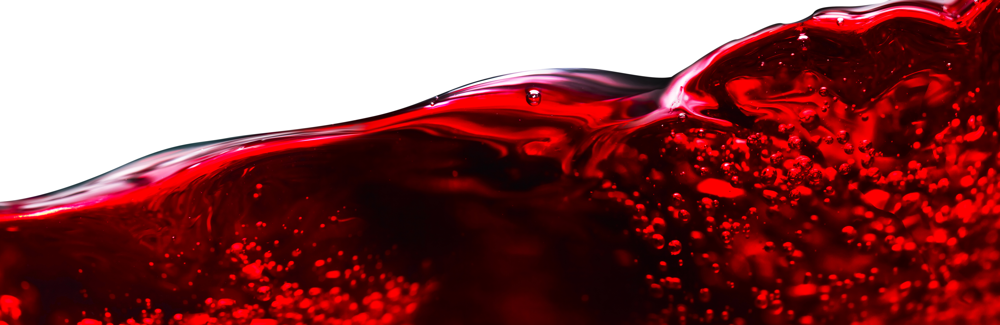

Velkommen, wilkommen, welcome
På denne siden kan du finne informasjon om
- Rød vin
- Hvit vin
- Oransje vin
Litt mindre tekst under her
På denne siden kan du finne informasjon om
De fleste vil si at lam er rødvinsmat, men det er en sannhet med modifikasjoner. Norsk tradisjonsmat som fårikål, pinnekjøtt og lammefrikassé er kanskje best med øl, hvitvin eller musserende.